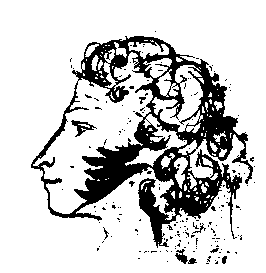

Слово об Александре Сергеевиче Пушкине.
"Гордиться славою своих предков не только можно,
но и должно; не уважать оной есть постыдное малодушие.
"А.С.
Пушкин
Дорогие николаевцы, земляки!
Вчера исполнилось ровно 200 лет с того дня, когда миру явился Гений, величие которого нами еще вполне не осознанно. В Евангелии от Иоанна сказано: "В начале было Слово, и Слово было у Бога, и Слово было Бог. Все чрез Него начало быть, и без Него ничто не начало быть, что начало быть. В Нем была жизнь, и жизнь была свет человеков. И свет во тьме светит, и тьма не объяла его... Был и Свет истинный, Который просвещает всякого человека, приходящего в мир. В мире был, и мир Его не познал. Пришел к своим, и свои Его не приняли...
".Я задаюсь вопросом, что здесь сказано не о Рафаэле и Моцарте, не о Пушкине и Шевченко?! И не нахожу ничего лишнего, все правда, все истина и все точно сказано наперед о природе самых ярких представителей Человечества - Гениях мира сего. Каждый из них является самым ярким выразителем сущности своего народа и вместе с тем каждый из них есть самое великое достояние всего Человечества, самое великое явление человеческого Духа и Свет истинный, просвещающий нас, не зависимо от национальности и от страны. Все Гении были Пророками, но как справедливо сказано в Библии - Нет Пророков в своем Отечестве! Потому-то здесь и говорится: "В мире был, и мир Его не познал. Пришел к своим, и свои Его не приняли."
Итак, в чем же здесь дело? Уж не в том ли, как говорил Пушкин, что мы ленивы и не любопытны? В отношении Пушкина этого не скажешь. Ежегодно во всех уголках Земли выходит в общей сложности около полутысячи разных статей, книг и других публикаций, а в юбилейные годы все удваивается. К великому сожалению количество не перешло в качество. До сих пор не написано Академической биографии поэта, не завершена Летопись жизни и творчества, нет Академического полного собрания сочинений с комментариями, нет Пушкинской энциклопедии, не правильно определены адресаты многих стихотворений, не поняты поэмы и проза. Мне представляется, что познать любого Гения невозможно без конгениального мышления, а этого, увы, не может быть много в силу природных ограничений. Так что процесс постижения природы гениальности отдан вечности.
Горький говорил о том, что жизнь Пушкина была сказочно разнообразна, мне же представляется, что жизнь Пушкина была еще более гениальной, чем его творчество. И дело не столько в том, что для любого Гения его собственная жизнь является основным источником творчества, а в том, что Пушкин прожил свою жизнь с наибольшей эффективностью для своего главного предназначения, выраженного в словах: "Глаголом жечь сердца людей!". Жизнь Пушкина, как и любого Пророка, наполнена таинством и глубоким символизмом и потому в творчестве его нет проходных стихов и произведений, все они несут в себе некий тайный смысл и обязательно божественный подтекст. Пушкин, как Пророк, знал себе цену и знал, что многие последователи будут идти за ним, как он писал: "питая надежды открыть новые миры, стремясь по следам Гения".
Мне посчастливилось 19 лет идти по следам Пушкина и Даля, исследуя их связи с Николаевщиной. Именно благодаря любви к родной земле, удалось глубже проникнуть в мир Гения Пушкина и открыть некоторые из его священных тайн. Обследовав более 40 архивов и библиотек в 10-ти городах бывшего СССР, я нашел много нового и неизвестного. В результате опубликовано около 40 статей, поставлен памятник и две мемориальные доски поэту работы заслуженного скульптора Ю.А.
Макушина, его жены и сына, а также архитектора О.П. Поповой. В музее Судостроения и флота экспонируется восстановленная по архивным данным модель брига "Мингрелия", выполненная инженером Г.Г. Кузнецовым. Не буду подробно говорить о нашем земляке В.И. Дале, 200-летний юбилей которого мы обязаны достойно отметить в 2001 г. Замечу только, что Пушкин и Даль прекрасно дополнили друг друга в отношении того, что можно назвать наиболее важным направлением в развитии любой культуры - ее языка. Пушкин, как известно, создал новый, современный русский язык, а Даль сохранил для потомства в своем "Толковом словаре" допушкинский язык. Кто знает, может быть именно по этой причине Далю, жившему в то время в Оренбурге, было суждено отпустить душу Пушкина на волю? Уж не потому ли какое-то провидение настойчиво разводило их здесь на юге? И уже совсем загадочно то, что с Николаевом связаны причины обеих ссылок Пушкина.Известно, что своей первой ссылкой поэт был "обязан" основателю Харьковского университета В.Н. Каразину, чья могила находится на нашем историческом кладбище. Именно Каразин 31 марта 1820 г. написал донос на Пушкина, Александр заинтересовался эпиграммами, приказал сделать обыск, арестовать Пушкина и намеревался сослать его в Сибирь. Благодаря вмешательству П.А. Чаадаева, Н.М. Карамзина, А.И. Тургенева поэта сослали на юг. Что касается второй ссылки в Михайловское, то ее подлинной причиной были не строчки об атеизме поэта в перехваченном письме, а тайный приезд поэта в Николаев на яхте "Утеха" в начале октября 1823 г., о чем многие прочли уже в статьях газеты "Вечерний Николаев", начиная с 22 мая.
Наконец, мною было высказано предположение о тайне гибели Пушкина (статья "Пророк России" опубликована 6 и 9 июня 1992 г. газетой "Радянське Прибужжя)", над разгадкой которой билась вся Россия, и эта разгадка тоже связана с историей нашего города. Она заключается не в событиях 1836 г., а связана с восстанием декабристов в 1825 г. и той ролью, которую в нем сыграл Пушкин и его гражданский идеал, первый адмирал Черноморского флота Н.С. Мордвинов, кто единственный из всего Верховного Суда голосовал против смертной казни декабристов. Напомню, что после смерти Потемкина Мордвинов правил здесь в 1792-1799 гг., ему мы обязаны началом литературной жизни в Николаеве, изданием здесь первых книг, таких как "Таврида" С.С. Боброва, "Арфаксад" и "Новый синопсис" П.М. Захарьина, которые вдохновили Пушкина, по его собственному признанию, на создание своих произведений.
И до меня было известно, что Пушкин с 1820 по 1824 гг. 5 раз бывал проездом в Николаеве. Замечу, что ни одного столичного пушкиниста не могла интересовать история нашего края так, как она интересует нас с вами. Именно благодаря этому интересу удалось и поправить академическую науку на основе найденных архивных данных, изучения рукописей поэта, черновых записей в них и особенно рисунков, которые в большинстве своем имеют дневниковый характер. В результате, сегодня можно говорить уже о
7-ми посещениях Пушкиным нашего города: в начале сентября 1820 г., марта 1821 г., октября 1823 г., в конце мая и июля 1824 г. По явно заниженным мною данным в Николаеве Пушкин написал: около 30 строк из поэмы "Кавказский пленник", 14 строф из "Евгения Онегина", включая начало письма Татьяны к Онегину, и 4 стихотворения! Так что нам воистину есть чем гордиться! К нам имеет отношение элегия "Погасло дневное светило..." и стихотворение "Завидую тебе, питомец моря смелый,..", созданные соответственно на борту николаевских брига "Мингрелия" и яхты "Утеха", этой же яхте посвящено и стихотворение "Кораблю" ("Морей красавиц окрыленный..."). С нашим городом связана и поэма "Бахчисарайский фонтан", посвященная Софье Потоцкой. По признанию Пушкина, на создание поэмы его подвинула и поэма "Таврида" С.С. Боброва, изданная в Николаеве, у нас Пушкин обсуждал свою поэму с А.П.Зонтаг. Кроме того, стихотворение "Фонтану Бахчисарайского дворца" вероятно было написано под впечатлением посещения в нынешнем Яхт-клубе Турецкого фонтана и Потемкинского дворца (не сохранился), напоминавших Бахчисарай. Сюда же следует добавить составление карты Украины с нашими местами и анекдоты о Потемкине, записанные здесь. Напомню один из них, записанный на украинском языке, с упоминанием нашего города: "Однажды Потемкин, недовольный запорожцами, сказал одному из них: "Знаете ли вы, хохлачи, что у меня в Николаеве строится такая колокольня, что как станут на ней звонить, так в Сече будет слышно?" - "То не диво,- отвечал запорожец,- у нас в Запорозцине е такие кабзары, що як заграють, то аж у Петербурси затанцують".К Николаеву относится и создание первых прозаических произведений поэта "Повестей Белкина" и это тоже новая находка. Есть несколько свидетельств, что идея написания повестей могла возникнуть у Пушкина после прочтения занимательной повести первого николаевского прозаика Петра Михайловича Захарьина "Арфаксад. Халдейская повесть", изданной в Николаеве. Именно поэтому Пушкин сделал Петра Захарьина "отцом" Ивана Петровича Белкина, избрал годом его рождения 1798 г., год издания в Николаеве повести "Арфаксад", и указал также на дату и место его кончины. В примечаниях к повести "Станционный смотритель" есть указания и на Алексея Грейга Николаевского. К числу наиболее интересных находок следует отнести создание Пушкиным "Сказки о царе Салтане" в 1831 г., как описания тайного приезда в Николаев на яхте "Утеха" в октябре 1823 г., к которой мною подготовлено 39 примечаний, явно свидетельствующих об этом. Нет возможности перечислить все, что связывает наш край с Пушкиным. По результатам этих исследований в настоящее время мною подготовлен для печати фотоальбом "Пушкин и Николаевщина", с тезисным изложением 42-х тем о связи поэта с нашим краем. Альбом содержит 224 иллюстрации, в том числе тексты, написанные здесь поэтом и связанные с Николаевщиной. Благодаря личной поддержке руководства области, Н.П.
Круглова и В.С. Чайки, этот фотоальбом планируется к изданию в "Возможностях Киммерии".Наш город имеет традиции в увековечении памяти Пушкина. Первый историк Николаева Г.Н.
Ге был и первым пушкинистом. При его участии в 1883 г. была открыта Пушкинская народная школа, а к 100-летию со дня рождения поэта был установлен бюст у школы и ул. Бульварная переименована в Пушкинскую. Затем в 1914 г. эстафета была принята Музеем им. В.В. Верещагина, экспонатом № 1 в котором по инициативе И.Е. Репина стала картина И. Айвазовского "Пушкин на берегу моря", сегодня музей хранит немало работ, имеющих отношение к пушкинскому времени, и даже редкий прижизненный портрет поэта. 19 октября 1989 г. при Художественном музее им. В.В. Верещагина был создан Николаевский Пушкинский клуб, учредителями которого стали Художественный музей и Фонд культуры. За 10 лет работы членами клуба опубликовано более 80 статей о Пушкине и краеведении, проведено около сотни литературно-музыкальных вечеров, в том числе совместно с другими национальными обществами. Сегодня клуб имеет и свою страничку в Интеренет, единственную в СНГ среди подобных общественных организаций. К 10-летию клуба, если найдутся спонсоры, планируется издать труды членов Пушкинского клуба. Вне всякого сомнения вся эта работа клуба стала возможной благодаря поддержке областных и городских властей Николаевщины.Дорогие земляки! 19 лет исследования жизни и творчества поэта дают основания мне утверждать, что Гений Пушкина является одним из самых универсальных и всеохватыващих из всех известных нам. Пушкин, как никто другой, владел в совершенстве Искусством Жизни, которое стало для него инструментом познания и личного творчества. Не каждому дано уметь пройти к Вечности над пропастью Забвения по тонкой нити бытия, удерживая равновесие при больших амплитудах колебаний, без которых просто не возникает поэзии.
Пушкин был прирожденным Протеем, как сказал Ф.
Достоевский: "Не было поэта с такою всемирною отзывчивостью, как Пушкин, и не в одной только отзывчивости тут дело... а в перевоплощении своего духа в дух чужих народов, перевоплощении почти совершенном... Это только у Пушкина, и в этом смысле, повторяю, он явление невиданное и неслыханное, а по-нашему, и пророческое...".Как и всякий Гений, Пушкин неподражаем и неповторим и в этом смысле его жизнь и искусство могут стать одним из элементов светской религии будущего. Предвидя это, в "Моцарте и Сальери" поэт писал: "Нас мало избранных, счастливцев праздных, Пренебрегающих презренной пользой, Единого прекрасного жрецов.". Но, в этой светской религии нет и не может быть места возведению его самого в кумиры, поскольку Пушкин сознательно не стремился быть святым. Величие и вечность его творчества как раз и построены на гармоническом единении несоединимого - божества и страсти. Единственное на что он обращал наше внимание так это на то, что нельзя смотреть на жизнь Гения, как на жизнь обыкновенного человека. В статье "Вольтер", говоря об этом, поэт указал и на свое жизненное кредо. В частности, Пушкин писал: "Что же из этого заключить? что гений имеет свои слабости, которые утешают посредственность, но печалят благородные сердца, напоминая им о несовершенстве человечества; что настоящее место писателя есть его ученый кабинет и что, наконец, независимость и самоуважение одни могут нас возвысить над мелочами жизни и над бурями судьбы.".
Во все времена делались попытки принизить Пушкина, прежде всего, как человека, преувеличить значение его человеческих слабостей, имевших место в жизни. Но все эти усилия легко перечеркиваются его трудами, ставшими животворящим памятником поэту. Как сказала Анна Ахматова: "Он победил и время, и пространство. Говорят: пушкинская эпоха, пушкинский Петербург. И это уже к литературе прямого отношения не имеет, это что-то совсем другое. В дворцовых залах, где они танцевали и сплетничали о поэте, висят его портреты и хранятся его книги, а их бедные тени изгнаны оттуда навсегда... И напрасно люди думают, что десятки рукотворных памятников могут заменить тот один нерукотворный".
Самой яркой чертой жизни и творчества Пушкина является его неистощимая Любовь к людям, а более всего к Женщине, как к неиссякаемому источнику вдохновения. Нам, николаевцам, особенно приятно помнить о том, что наш город в сознании и творчестве поэта связан с его любовью к Софье Станиславовне Потоцкой-Киселевой. Именно поэтому самые лучшие строфы, посвященные женщинам из 1-й главы "Евгения Онегина", написаны им в Николаеве. Поэт, как известно, любил многих женщин, но только София была любовью на всю жизнь. Ей он посвятил множество поэм, стихотворений, рукописи его буквально переполнены ее портретами. Это была без преувеличения Великая Любовь. О такой любви Апостол Павел в первом послании к коринфянам писал: "Если я говорю языками человеческими и ангельскими, а любви не имею, то я - медь звенящая или кимвал звучащий. Если имею дар пророчества, и знаю все тайны, и имею всякое познание и всю веру, так что могу и горы переставлять, а не имею любви ,- то я ничто. И если я раздам все имение мое и отдам тело мое на сожжение, а любви не имею, нет мне в том никакой пользы. Любовь долготерпит, милосердствует, любовь не завидует, любовь не превозносится, не гордится, не бесчинствует, не ищет своего, не раздражается, не мыслит зла, не радуется неправде, а сорадуется истине; все покрывает, всему верит, всего надеется, все переносит. Любовь никогда не перестает, хотя и пророчества прекратятся, и языки умолкнут, и знание упразднится. Ибо мы отчасти знаем, и отчасти пророчествуем;
когда же настанет совершенное, тогда то, что отчасти, прекратится. Достигайте любви; ревнуйте о дарах духовных...". Именно такая Любовь пронизывает и все творчество Пушкина. Поэтому всем заблудшим, потерявшим жизненные ориентиры, я говорю: читайте животворящие поэзию и прозу Пушкина и вы воскреснете к новой жизни! Любите Пушкина и он воздаст вам сторицей за эту любовь!И, наконец, напомню те пророческие слова, которыми закончил свое непревзойденное выступление Ф.
Достоевский 8 июня 1880 г. при открытии памятника поэту в Москве, он сказал: "Пушкин умер в полном развитии своих сил и бесспорно унес с собою в гроб некоторую великую тайну. И вот мы теперь без него эту тайну разгадываем...". От себя добавлю, что каждый человек есть тайна, но от прикосновения к тайне Гения становишься вдвойне человеком. Уверен, что в нашем мире нет более глубокой тайны, чем Природа Гениальности. И, если бы нам даже удалось собрать все поколения людей, ушедшие от нас и те что еще придут, то окажется, что все они, вместе взятые, не смогут заменить собою ни одного из Гениев! Не случайно Гений Украины Т.Г. Шевченко написал непревзойденное стихотворение "I мертвим, i живим, i ненародженним землякам моїм в Украйнi i не в Украйнi моє дружнєє посланiє".Кажется В.
Ключевской очень точно заметил, что о Пушкине всегда хочется сказать так много, что, наговорив уйму глупостей, невольно умолкаешь от бессилия высказать невыразимое. Я не считаю себя исключением из этого правила, за что и приношу вам свои извинения. Да, вот забыл сказать еще одно, как всегда, может быть, самое главное: Жизнь Пушкина, как и жизнь Христа, была принесена в жертву во имя нашего с вами спасения...Как Солнце, Он - вне нашего закона!
Его искусство, как вселенский Мир!
И лик Его - Всевышнего икона,
Кто жизнь отдал за наш веселый пир.
Не избежал и Он распятья власти,
Озлобленной безвластием над ним,
Но Гений, все презрев напасти,
Воскрес за вдохновением своим.
И пусть при жизни не был Он святым,
Но дух Его возвышенный так ясен,
Так искренен, так нежен, так прекрасен,
Что кажется Он весь нам неземным!
Да святится Светлое имя Пушкина и ныне, и присно, и во веки веков!
Аминь.
Русский драмтеатр, 16 час.
г. Николаев, 7.06.1999 г. А. Золотухин, председатель Пушкинского клуба.